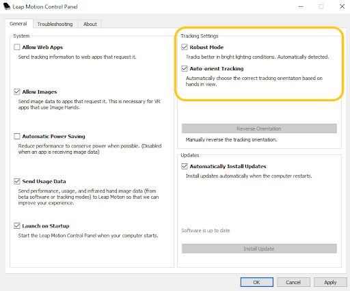
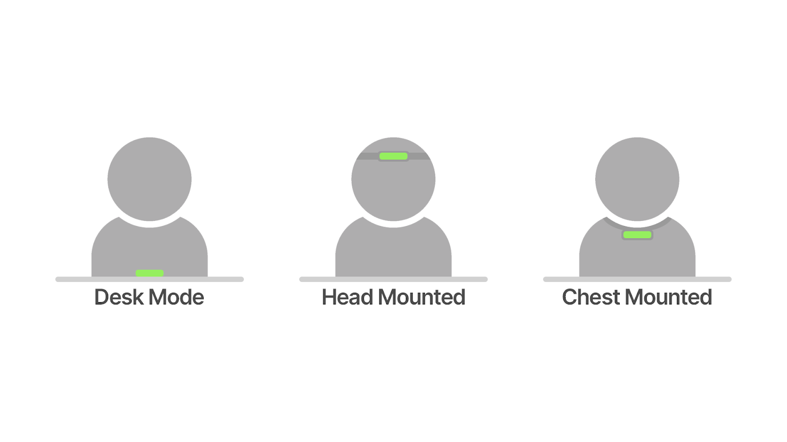
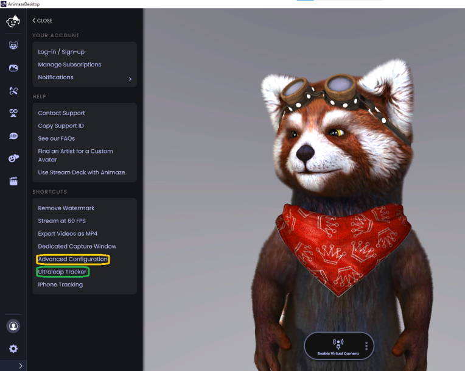
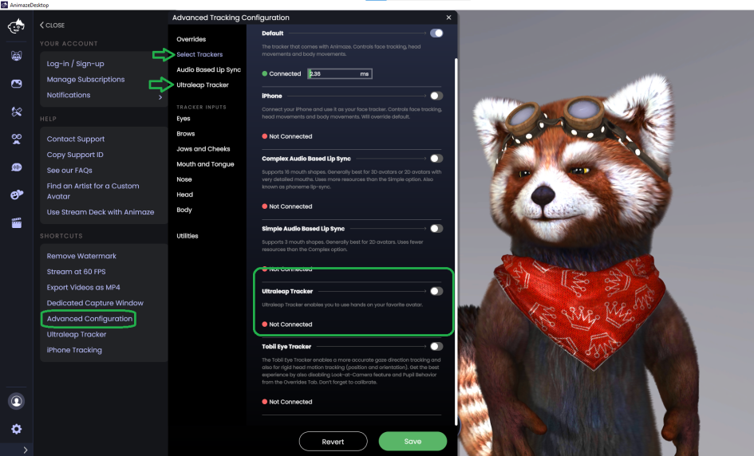
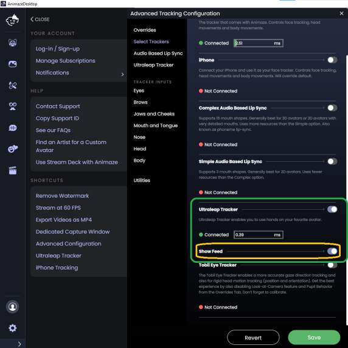
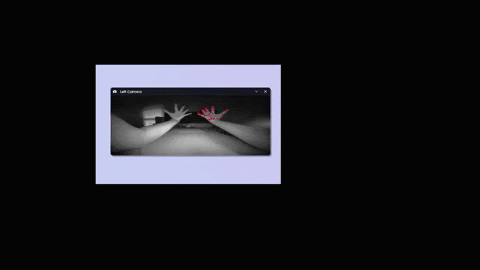
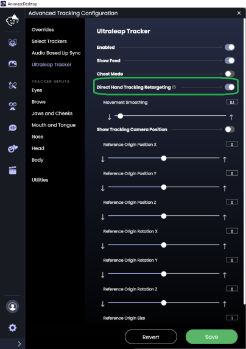
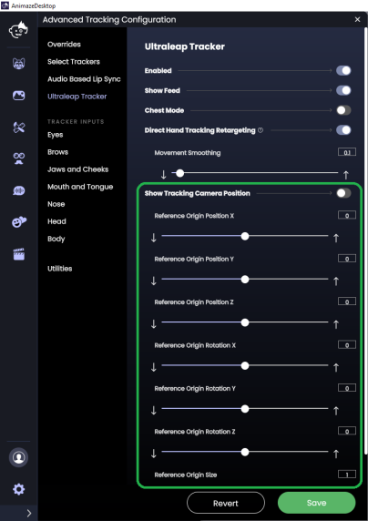
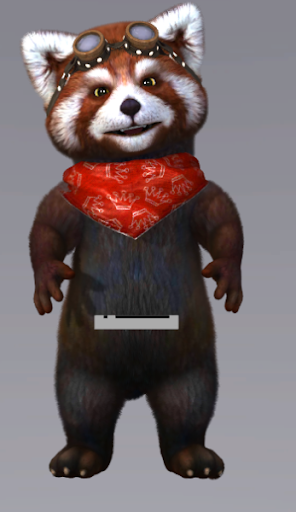
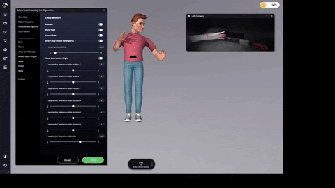

Ultraleap tracker
Experience the full power of natural interaction with your Ultraleap tracker.
Animaze supports Ultraleap hand tracking for the following types of avatars :
-
3D: We are in the process of updating our 3D avatar T-Poses. As a rule of thumb, if the avatar has… thumbs, it will likely work. Avatars that do not have arms and or hands will not work with Ultraleap hand tracking.
-
2D: Read all about it our in our specialized documentation here
-
VRM
-
Ready Player Me
Once you have your avatar selected, you can scroll down to get started!
To start, download Ultraleap’s Tracking Software for Windows (4.1+).
Next, plug in your Leap Motion Controller. Update the settings in the Leap Motion Control Panel by searching Leap Motion in your PC settings. The Tracking Settings are crucial.

Animaze supports Ultraleap hand-tracking software in both Desk Mode and Chest Mode.

The Leap Motion Controller has a specified area that it can track. Mounting the tracker to your chest positions the tracked area such that you can move your arms and hands more naturally. Additionally, with this setup, finger tracking tends to be more accurate. Desk mounting is quicker to set up and often captures large gesticulations better than chest mounting.
There are many ways to mount your tracker to your chest. You can purchase a Leap Motion chest mount online. Try searching websites like eBay and Etsy. Or, you can tape the tracker to your chest. Most of us on the Animaze use tape or velcro strips. We are crafty like that.
After properly setting up the Leap Motion Controller, the next step is turning on Ultraleap hand tracking in Animaze.
To do so, head to Profiles in the Animaze app:

Click on Ultraleap hand tracking and toggle on Ultraleap hand tracking.

Toggle show feed on.

If you have mounted the tracker to your chest or head, toggle Chest Mode on.
Use the feed to make sure that the tracking landmarks (dots) are properly aligned and stable. If you are having trouble getting the dots to stick, try turning your palms towards the tracker and moving your hands further from the tracker.

You can stop here and save your settings. Scroll down to learn more about the advanced settings.
Optimizing Ultraleap Hand Tracking in Animaze
Reveal the advanced controls by toggling on Direct Hand Tracking Retargeting.

Toggle on Show Tracking Camera Position. This toggle displays an overlay of the Leap Motion Controller to help you visualize your hand tracker in the Animaze world.

If you are using a desk mount, you will see the left image. If you are using a chest mount, you will see the right image. If you don’t want the overlay to show during a stream, it’s important to turn off this overlay once you are done adjusting the configurations.

Use the controls to match the Leap Motion Controller overlay in Animaze to the positioning of your actual tracker. Once the tracker overlay in Animaze matches the tracker placement on your desk or chest, you may consider tweaking the Tracking Camera Positions controls (top controls) to account for your avatar’s arm length. For example, if your avatar has short arms, you may consider nudging the Z origin outwards to get as much arm length as possible.

Once satisfied , press save.
Troubleshooting guide for Ultraleap hand tracking
For various reasons, your Leap Motion Controller can fail to work properly. Take a look at Ultraleap’s troubleshooting guide to help you to determine the cause.
Additionally, there is a surprising amount of math involved in making avatar hands and arms work with Ultraleap’s hand tracking. To simplify the math and ensure you have a great experience with your tracker, hand size and arm length customizations may revert to the default size and length. Similarly, if your Leap Motion Controller is active in Animaze, hand and arm customizations may not work as expected.